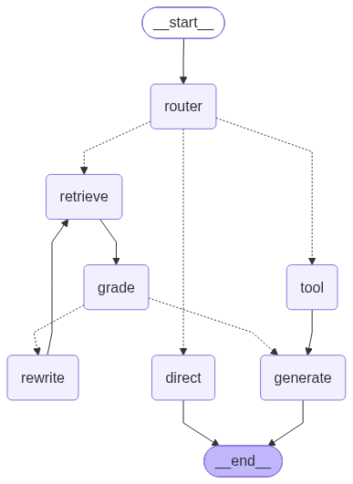
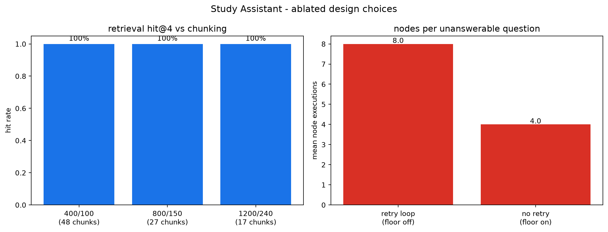

A LangGraph retrieval-augmented agent over eight lecture-note documents - with tool calls, an inspectable trace, and a measured evaluation.
4.1 RAG · 4.2 Workflow · 4.3 Evaluation · 4.4 Demo
PDF -> PyPDFLoader -> split(800/150) -> all-MiniLM-L6-v2 (384-d, L2) -> FAISS IndexFlatIP
mean chunk 652 chars; generated corpus, fully checkable
IndexFlatIP over normalised vectors - the score in every trace is a real cosine
no key, no cost; Unicode-safe FAISS persistence in store.py
START -> router -+-> retrieve -> grade -+-> generate -> END
| +-> rewrite -> retrieve (bounded retry)
+-> tool -----> generate -> END
+-> direct ---> END
AgentLLM exposes route/grade/rewrite/generate - the graph never knows if a hosted model or the offline scorer answers.
Rendered from the compiled graph itself, so it cannot drift from the code.
Numeric evaluation via a restricted AST walk - never eval, because tool input is untrusted model output. Handles pi, e, ^.
A curated, sourced table of canonical ECE formulas (Nyquist, Shannon, Carson, VSWR, ...). Cites the notes; keeps the evaluation reproducible.
| Metric | offline | LLM (Groq) |
|---|---|---|
| routing accuracy | 100% | 100% |
| retrieval hit rate | 100% | 100% |
| answer keyword rate | 93% | 100% |
| tool success rate | 100% | 100% |
| out-of-scope refusal | 67% | 100% |
| latency (median) | 56 ms | 4.4 s |
The 100%s are a ceiling from a small, self-authored set; the hosted LLM fixes the two weak (informative) metrics. Both runs are traced in LangSmith and replayed through the week4-study-assistant-eval dataset with evaluators.
Not in the corpus, but "transmission ... formula" makes retrieval return the transmission-lines notes and lexical grading passes it. Result: a fluent, cited, wrong answer. Root cause - overlap cannot separate "on topic" from "answers it".
Retrieval was correct; the extractive generator quoted the neighbouring sentence instead of Carson's rule. A generation-ranking failure, not a retrieval one.
hit@4 = 100% at 400/800/1200. Smaller chunks sharpen top-1 cosine (0.593 vs 0.517) at ~3x the index size. 800/150 kept as a non-degenerate default.
Low-coverage floor skips hopeless retries: 8 -> 4 nodes, 49 -> 22 ms per unanswerable question, same correctness.

Every node records a span. The offline run renders a local waterfall (eval/local_tracer.py); both configurations also stream 22 tagged trees to LangSmith, and docs/langsmith_figures.py pulls the real waterfalls back from the API.
Grounded · tool-only · refusal · corrective-retry loop · plus an offline-vs-LLM dataset experiment with custom evaluators.
streamlit run src/app.py
gpt-oss-20b not the configured gpt-oss-120b.gpt-oss-120b pass → cross-encoder reranker (q22) → bigger corpus → web-search tool.Everything runs with no API key; set GROQ_API_KEY / LANGSMITH_API_KEY to upgrade.